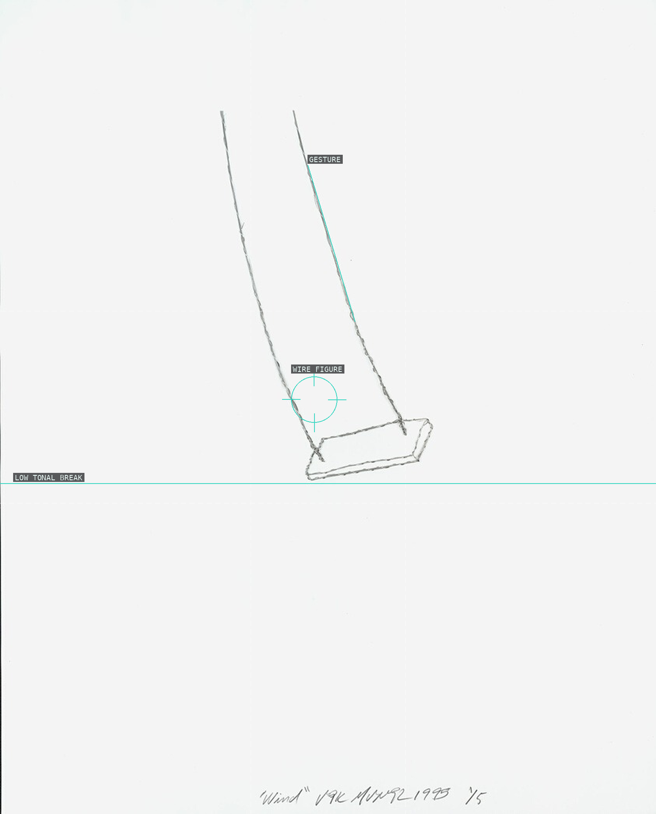
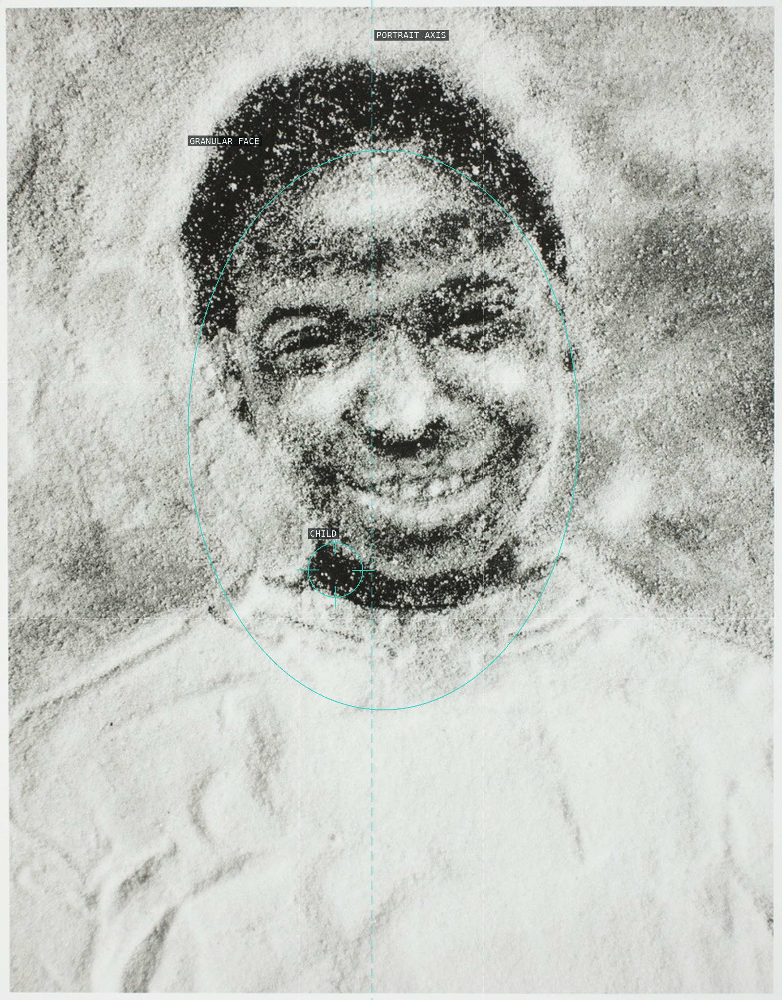
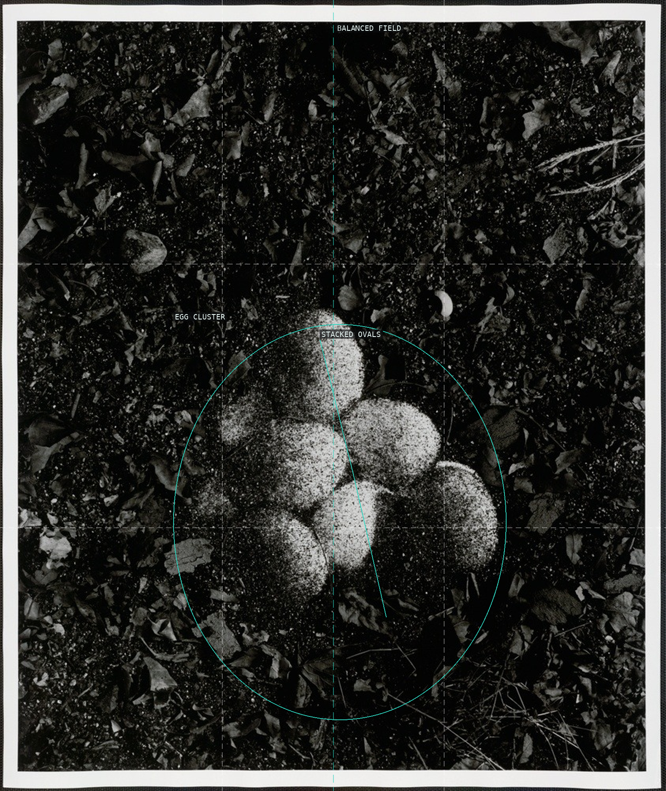
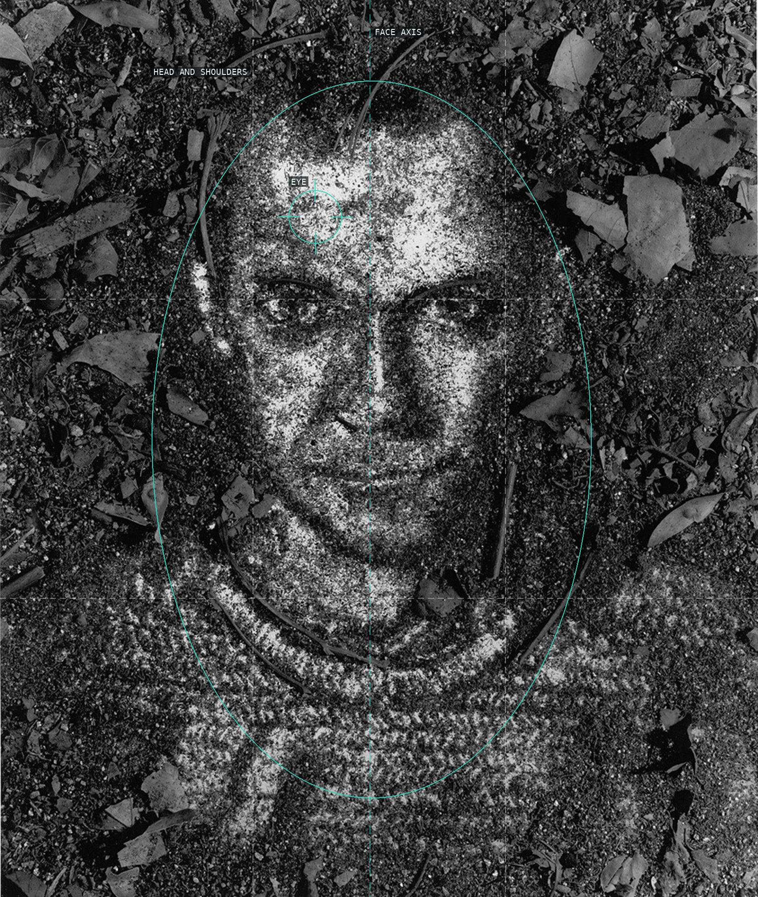
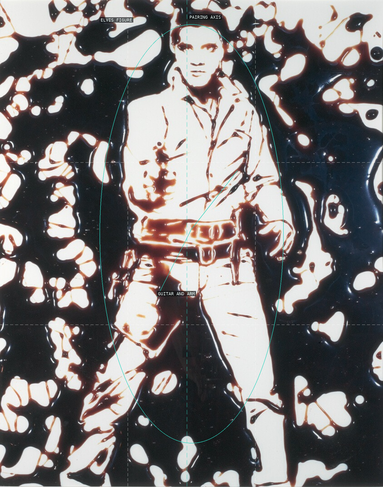
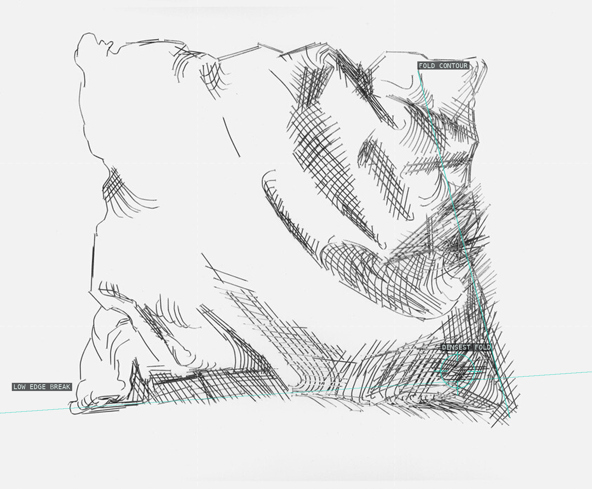
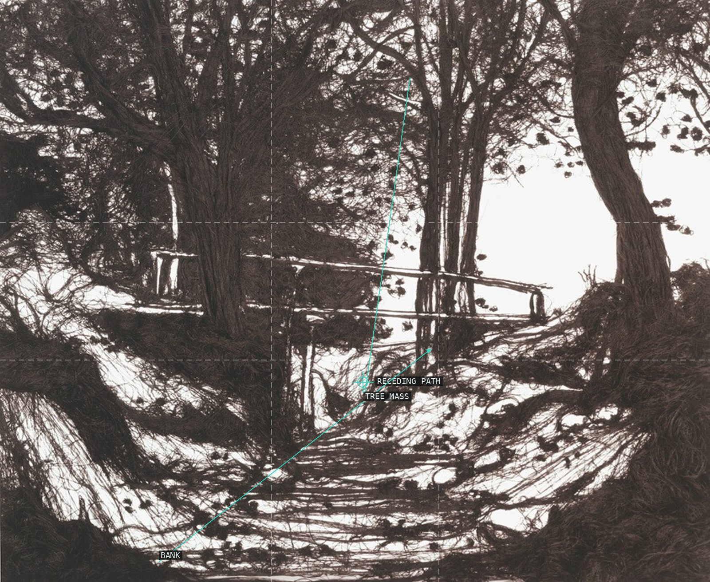
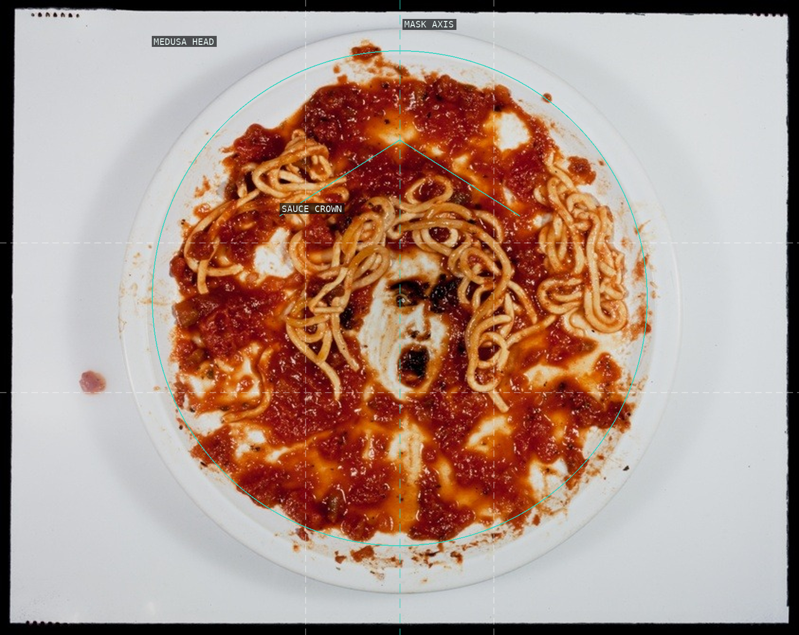
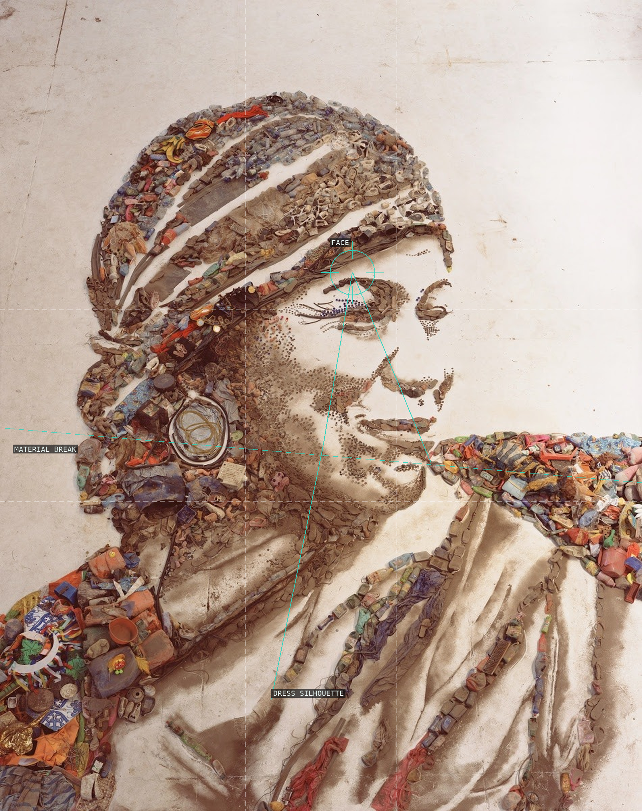
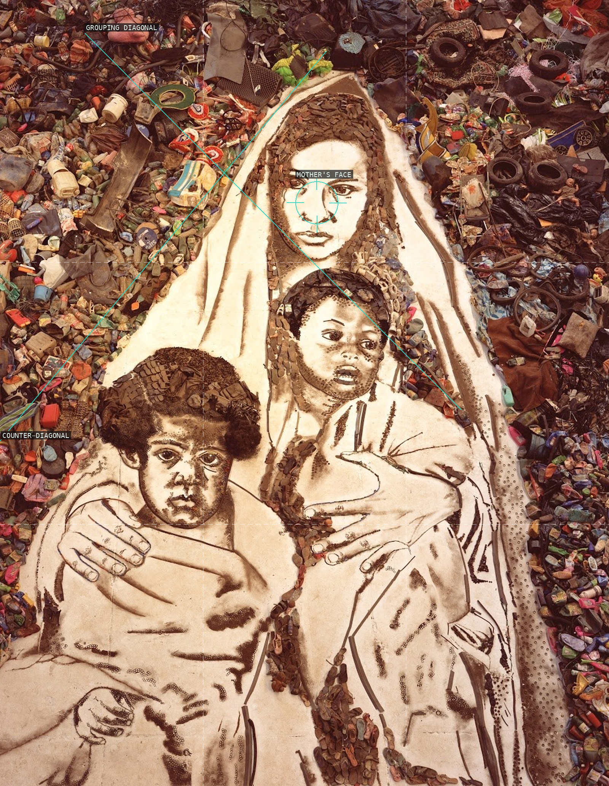

/* vik-muniz - proofs */
10 plates. Deterministic overlays rendered by the composition-analysis skill.

01-wind
A tiny wire figure makes an almost blank field into a measured stage.

02-jacinthe-loves-orange-juice
Near symmetry gives the granular portrait a direct, frontal address.

03-11-eggs
Repeated eggs read as a centered rhythm rather than separate still-life objects.

04-self-portrait
A centered portrait resolves from an unstable field of marks.

05-double-elvis
The doubled celebrity image works by balance before its syrup surface is recognized.

06-pillow-ii-after-durer
Hard marks make the pillow's soft volume read through a diagonal fold.

07-11000-yards-helmingham-dell
Thread makes the landscape's recession visible as a constructed route.

08-medusa-marinara
A symmetric mask holds the unruly edible material in a frontal field.

09-pictures-of-garbage-the-gipsy-magna
A monumental figure resolves from refuse through face and dress silhouette.

10-pictures-of-garbage-mother-and-children
Crossed body diagonals bind the maternal group inside a dense field of refuse.